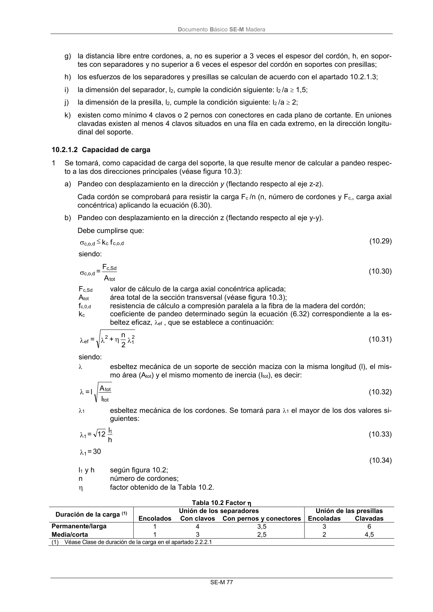
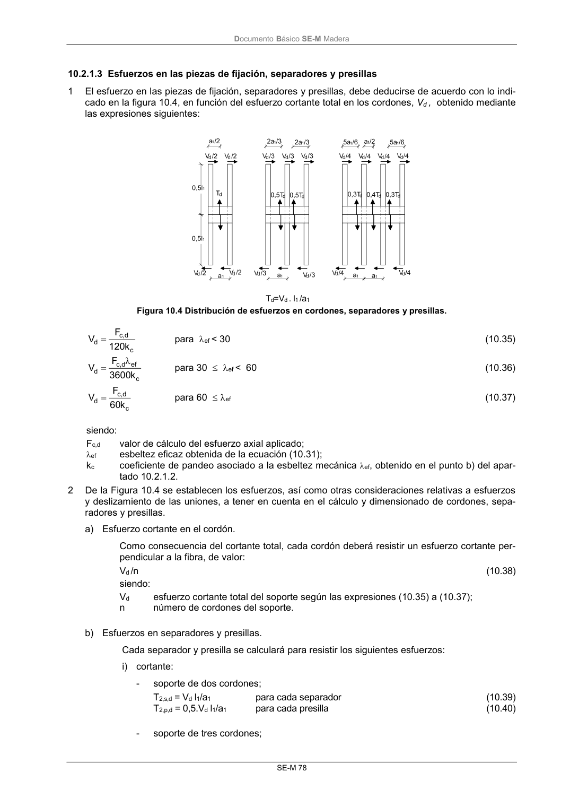

DB-SE-M · 10.2.1.2 Capacidad de carga · versión 2019-12-20 · capa oficial
Formatos: JSON compacto · Markdown · PDF fuente
Ámbito del documento · texto del ámbito · documento y tablas
ID técnico a0143 · PDF pág. 83-84 · jerarquía no validada por persona · contrastado con el literal de la página 83 (candidato tipográfico); no validado por persona · padre: a0141
10.2.1.2 Capacidad de carga 1 Se tomará, como capacidad de carga del soporte, la que resulte menor de calcular a pandeo respec- to a las dos direcciones principales (véase figura 10.3): a) Pandeo con desplazamiento en la dirección y (flectando respecto al eje z-z). Cada cordón se comprobará para resistir la carga Fc /n (n, número de cordones y Fc,, carga axial concéntrica) aplicando la ecuación (6.30). b) Pandeo con desplazamiento en la dirección z (flectando respecto al eje y-y). Debe cumplirse que: f k d o, c, c d o, c, (10.29) siendo: A F = tot Sd c, d o, c, (10.30) Fc,Sd valor de cálculo de la carga axial concéntrica aplicada; Atot área total de la sección transversal (véase figura 10.3); fc,0,d resistencia de cálculo a compresión paralela a la fibra de la madera del cordón; kc coeficiente de pandeo determinado según la ecuación (6.32) correspondiente a la es- beltez eficaz, ef , que se establece a continuación: 2 1 2 ef 2 n + = (10.31) siendo: esbeltez mecánica de un soporte de sección maciza con la misma longitud (l), el mis- mo área (Atot) y el mismo momento de inercia (Itot), es decir: I A l = tot tot (10.32) 1 esbeltez mecánica de los cordones. Se tomará para 1 el mayor de los dos valores si- guientes: h l 12 = 1 1 (10.33) 30 = 1 (10.34) l1 y h según figura 10.2; n número de cordones; factor obtenido de la Tabla 10.2. Tabla 10.2 Factor Duración de la carga (1) Unión de los separadores Unión de las presillas Encolados Con clavos Con pernos y conectores Encoladas Clavadas Permanente/larga 1 4 3,5 3 6 Media/corta 1 3 2,5 2 4,5 (1) Véase Clase de duración de la carga en el apartado 2.2.2.1 DocumentoBásico SE-M Madera SE-M 78


PDF fuente redistribuible: copia fiel enlazada en esta página (SHA256 verificado).